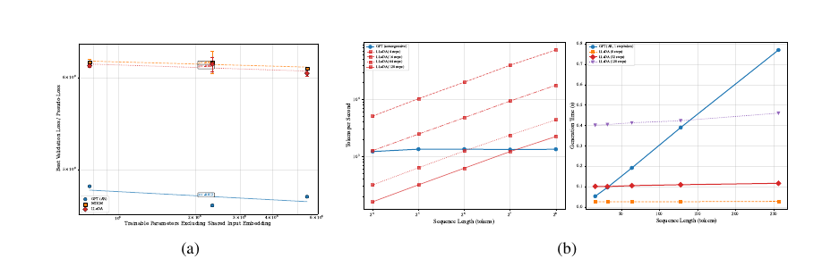

TrainYourOwnGPT: Building & Analyzing GPT-Style Language Models from Scratch
Overview
TrainYourOwnGPT is a four-part study of GPT-style language modeling built from first principles: (A) implement and tune a decoder-only Transformer with Rotary Positional Embedding (RoPE) from core PyTorch components on Penn Treebank (PTB); (B) analyze how validation loss scales with parameter count and how three architectural modifications behave under a fixed budget; (C) adapt Qwen2.5-0.5B with LoRA on arXiv abstracts under a pre-registered generation evaluation; and (D) compare the autoregressive baseline with two simplified masked-diffusion language models (MDLM, LLaDA) at matched backbone sizes, including A100 inference benchmarks. The best scratch-trained configuration reaches a validation perplexity of 105.15±0.93. In a team of two, Kaidi Zha led the scaling-law and architectural-comparison experiments (Part B) and the LoRA fine-tuning study (Part C), and shared responsibility for the diffusion-language-model study (Part D).
Background & Motivation
Understanding why language models scale—and when architectural tweaks and adaptation genuinely help—requires controlled experiments built from first principles, not off-the-shelf pipelines. Three questions drive the study. Scaling. Does validation loss follow a single power law in trainable parameters when width, depth, and a fixed 10-epoch budget change together—and how does per-token loss vary across positions of a 256-token context window? Architecture. Do QK normalization, attention gating, and value embeddings each improve a small GPT under identical width, depth, optimizer, and budget? Adaptation and paradigm. Can a 0.89%-parameter LoRA adapter shift a pretrained model's output register toward scientific abstracts, and do masked-diffusion objectives offer a viable alternative to left-to-right generation at matched model size?
Method / Implementation
Scratch GPT (Part A). A pre-norm Transformer decoder implemented from core PyTorch components: causal multi-head self-attention, SwiGLU feed-forward networks, residual connections with LayerNorm before each sub-layer, and RoPE applied to the query and key projections so that attention scores depend on both token content and relative displacement. Trained on word-level PTB with the next-token cross-entropy objective; perplexity is reported as exp(loss).
Architectural variants (Part B). Three interventions on the same backbone: QK normalization (per-head LayerNorm on projected queries and keys before scaled attention), a learnable per-head sigmoid attention gate initialized at zero (all heads start at half strength and are reweighted end-to-end), and per-layer value-embedding tables added to each value projection.
Parameter-efficient adaptation (Part C). LoRA with rank r=8 and scaling α=16 applied to the attention and feed-forward projections of Qwen2.5-0.5B (494M parameters, bfloat16), introducing 4,399,104 trainable parameters (0.89%) while all base weights remain frozen. The adapter is trained on 45,000 arXiv abstracts, chunked into 59,052 training and 6,584 validation windows of 256 tokens at 50% stride.
Masked-diffusion models (Part D). Two bidirectional variants sharing the same pre-norm / RoPE / SwiGLU backbone at matched parameter counts: a simplified MaskedDiffusionLM (mask probability t~U(0,1), unweighted cross-entropy on masked positions, 32-step linear unmasking) and LLaDA-style training (t~U([0.001,1)), 1/t-weighted loss, 128-step cosine unmasking with low-confidence remasking). Both are simplified implementations, not exact reproductions of the cited objectives.
Experiments
Configuration sweep (Part A). Five configurations jointly varying embedding dimension (64–256), depth (2–6), heads (2–8), learning rate, batch size, and dropout, each run at seeds 1234, 42, and 2024 for 10 epochs with AdamW (weight decay 0.01), gradient clipping at 1.0, and a cosine learning-rate schedule; model selection by best validation perplexity. This is a configuration sweep, not a one-factor-at-a-time ablation.
Scaling study and ablation (Part B). Five baseline decoders spanning 0.77M–5.46M trainable parameters excluding the shared input embedding (dmodel 64–192, depth 2–6), each replicated over the same three seeds, with L(N)∝Nα fits in log–log space. The architectural ablation is replicated at the d128 baseline over three seeds; the value-embedding rows add per-layer tables and are therefore width-matched but not parameter-matched.
Fine-tuning protocol (Part C). Effective batch size 16 (micro-batch 4 × 4 accumulation steps), learning rate 5×10−5 with 10% linear warm-up and linear decay, validation every 200 optimizer updates with early-stopping patience 3. Generation evaluation is pre-registered: five identical English prompts, three continuations per prompt (seed 1234 with deterministic per-sample offsets), temperature 0.8, top-p 0.9, at most 120 new tokens—15 continuations per model, scored for exam-format markers and five pre-registered abstract-opening phrases.
Inference benchmark (Part D). FP32 inference on one NVIDIA A100-SXM4-40GB, batch size 4, three warm-up runs and ten timed repetitions with CUDA synchronization, over sequence lengths 16–256; the GPT baseline uses greedy decoding without a KV cache.
Results
Scratch training. The best configuration (dmodel=128, L=4, H=4, learning rate 10−3, ≈3.61M total parameters) reaches 105.15±0.93 mean best validation perplexity. Training loss decreases monotonically over all 10 epochs with validation loss tracking closely—no overfitting within this horizon, though validation loss is still decreasing at epoch 10.
Scaling behavior. Validation loss improves from 0.77M to 2.33M parameters, then flattens and reverses at 3.65M–5.46M. A single power law does not summarize the range (full fit α=−0.0124, R²=0.406); the local s64–s128 fit (α=−0.0342, R²=0.999) should not be extrapolated. Because model shape, hyperparameters, and the fixed budget change together, the pattern reads as limited-budget saturation rather than a mechanism-specific scaling law. The token-position profile is non-monotonic (3.933 nats in positions 1–32, 3.870 in 33–64, then 3.904–3.916 through the final bin) and is observational only, since position is confounded with token composition.
Architectural ablation (d128, 3 seeds). Attention gating is the most reliable single gain (−2.02 PPL, to 103.13±1.14), followed by QK normalization (−1.15). Value embeddings are 1.28 PPL worse despite adding 5.12M parameters, indicating the extra token-specific capacity is not useful under this budget. The all-three combination has the best mean (102.90±0.46, −2.25) but beats attention gating alone by only 0.23 PPL—within seed variation, so no reliable interaction effect is claimed.
Fine-tuning outcome. Training stops at step 1600 (≈43% of the first epoch) and the step-200 checkpoint is selected by validation loss. The LoRA adapter eliminates examination-style formatting entirely (0/15 vs. 4/15 for the base model) and produces pre-registered abstract-opening phrases in 8/15 continuations (vs. 1/15 base)—a clear register shift. However, roughly half of the adapted continuations contain garbled tokens or incoherent passages, so the format gain is not accompanied by reliable fluency or factual quality.
Autoregressive vs. diffusion. Exponentiated masked-diffusion objectives sit far above GPT perplexity, but the objectives condition on different distributions and are not comparable across paradigms; only within-family trends are interpreted (GPT improves S→M and degrades at L; both DLMs are lowest at L). In the A100 benchmark, 128-step LLaDA throughput rises from 160 tok/s at length 16 to 2,226 tok/s at length 256, exceeding the uncached GPT implementation (1,213–1,337 tok/s) only at the longest tested length—an implementation-conditional systems result, not an asymptotic claim.


{kind=link}

Conclusion & Limitations
Conclusions. A from-scratch GPT with RoPE trains stably on PTB and reaches 105.15 validation PPL at ≈3.61M parameters; among the tested modifications, attention gating is the most reliable improvement, while added value-embedding capacity does not pay off under a small budget. A 0.89%-parameter LoRA adapter produces a measurable output-register shift toward scientific abstracts, and fixed-step masked-diffusion decoding can amortize its passes over longer outputs in measured throughput.
Limitations. All scratch models use a fixed 10-epoch budget, and the best run's validation loss is still decreasing at epoch 10, so the training horizon is not shown to be optimal. The configuration sweep changes several factors jointly and cannot attribute differences to any one of them; the value-embedding comparison is not parameter-matched; and the token-position profile is observational rather than causal. The fine-tuning evaluation is qualitative (15 samples per model, no reference answers), so fluency and factual accuracy cannot be assessed from it; a stronger conclusion would require fluency-controlled evaluation, a larger prompt suite, blinded human judgments, and reference-based factual checks. Finally, the diffusion models are simplified implementations, their losses are objective-specific and not cross-comparable with perplexity, and the inference benchmark is conditional on hardware, kernels, cache usage, and the chosen diffusion-step budget.